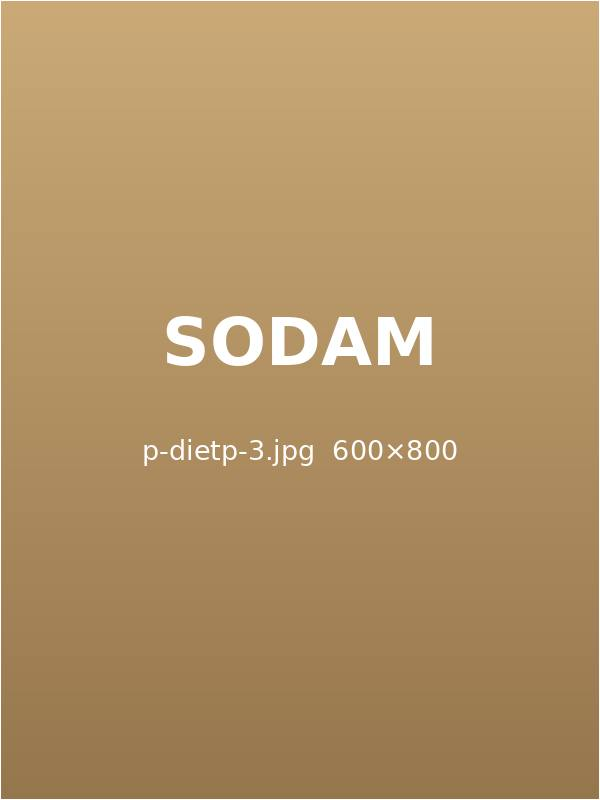
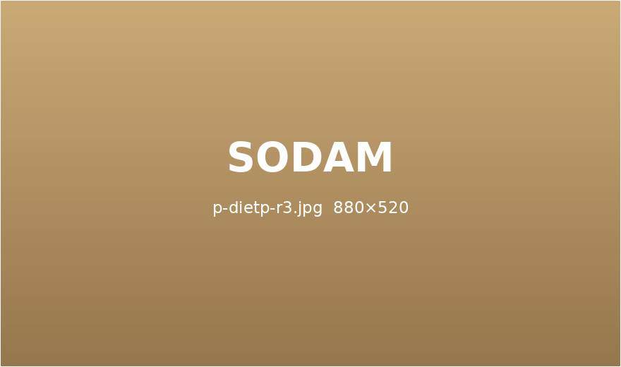
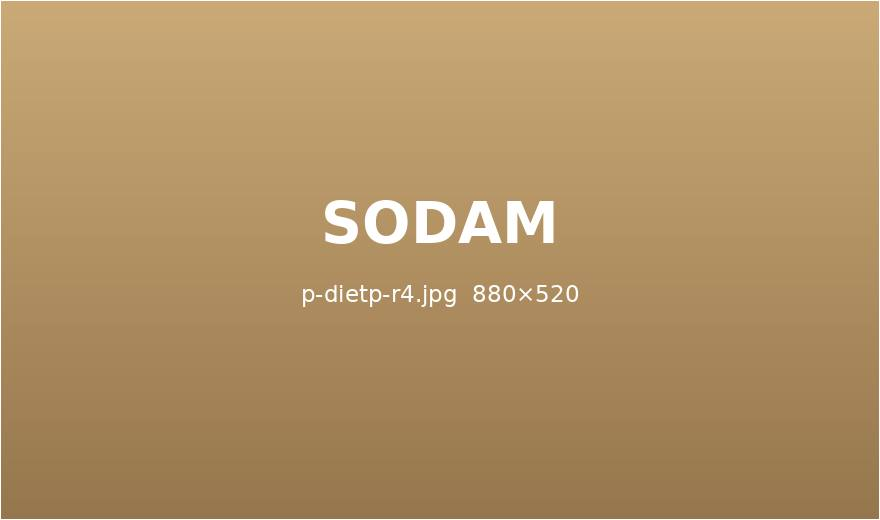
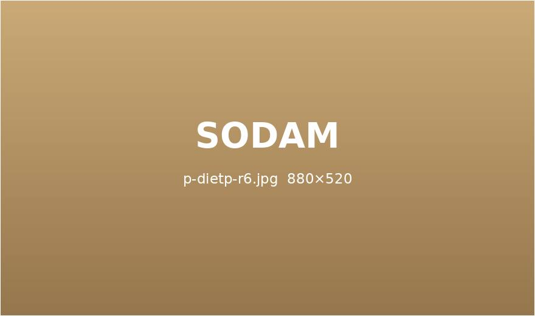

굶지 않아도 되는 다이어트,
체질에서 시작합니다.
같은 식단으로도 누구는 빠지고 누구는 그대로입니다. 차이는 체질과 대사에 있습니다.
소담은 몸의 반응을 매주 확인하며 목표 체중까지 함께 갑니다.
이런 다이어트,
번번이 실패합니다.
의지가 약해서가 아닙니다. 방법이 몸에 맞지 않았을 뿐입니다.
체질을 고려하지 않은 프로그램
무작정 굶는 식단

몸의 반응을 살피지 않는 처방방법이 다르면, 결과도 다릅니다.
소담에서 관리받은 분들의 변화를 가정한 예시입니다.
50대 · 2개월2개월 동안 3.9kg 감량


40대 · 1개월1개월 동안 4.1kg 감량


소담 다이어트는 왜 덜 힘들까요?
식욕은 낮추고
공복감이 심한 체질은 식욕 조절 처방으로 억지로 참지 않아도 되게 돕습니다.
대사는 올리고
떨어진 기초대사를 끌어올려 같은 양을 먹어도 덜 쌓이도록 합니다.
부작용은 줄이고
심장 두근거림 · 불면 같은 반응을 매주 확인하며 처방을 조정합니다.
순환은 높이고
붓기와 노폐물이 잘 빠지도록 몸의 흐름을 정리합니다.
소담 다이어트가 다른 이유
정확한 진단
체성분 · 체질 · 식습관을 기록하고, 감량이 막히는 이유를 먼저 찾습니다.
1:1 다이어트 코칭
주간 체중 · 식단 기록을 함께 보며 처방과 생활 목표를 조정합니다.


부작용 최소화
복용 반응을 매주 확인하고, 불편한 증상이 있으면 바로 처방을 바꿉니다.

감량보다 어려운 유지,
요요 관리까지 설계합니다.
목표 체중에 도달한 뒤에도 몸이 새 체중을 기억하도록 유지기 처방과 생활 관리를 이어 갑니다.
유지기 처방식습관 점검월 1회 체성분 추적